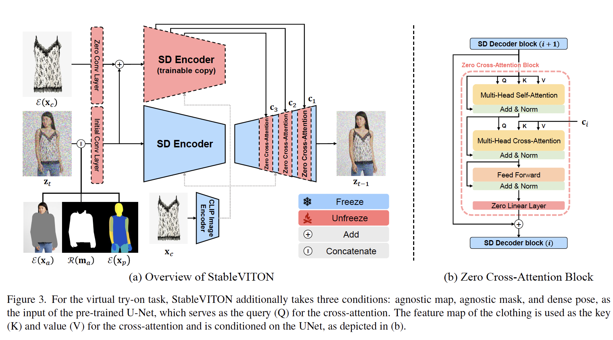
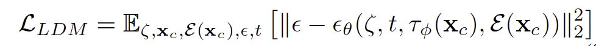
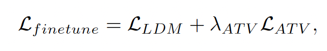

home..
Stableviton: learning Semantic Correspondence With Latent Diffusion Model For Virtual Try On
noonddudung2 / September 2024 (545 Words, 4 Minutes)
CVPR 2024
T2I
geo-aware
Paper
- Paper: StableVITON
- Github: StableVITON code
Abstract
- 문제점
- preserve the clothing details
- utilizing the robust generative capability
- 해결책 & contribution: SC between the colthing and the human body
- first end-to-end virtual try-on method without independent warping process
- zero cross-attention blocks
- attention total variation loss
Introduction
- preserving the clothing details <-> using the pretrained diffusion model
Method

Model Overview
- clothing-agnostic map: 의류 정보를 제거한 사람의 image
- a person image: $x \in \mathbb{R}^{H \times W \times 3}$
- clothing-agnoostic map: $x_a \in \mathbb{R}^{H \times W \times 3}$
- notation
- $z_t$: the noisy iamge
- $\mathcal{E}(x_a)$: latent agnostic map
- $x_{m_a}$: resized clothing-agnositc mask
- $\mathcal{E}(x_p)$: latent dense pose condition
- $\mathcal{E}(x_c)$: spatial encoder (SD encoder), fine details
StableVITON
- Zero Cross-Attention Block
- Q: previous self-attention layer (human body) <-> K,V: spatial encoder’s feature map (clothing)
- fails to learn the exact semantic correspondence between query and key tokens
- Augmentation: random shifts to input condiiton 
- Attetion Total Variation (ATV) Loss
- 문제:cross attention ma에서 scores가 분산되어서 나타남
- coordinate map $F \in \mathbb{R}^{H_1 \times W_1 \times 2}$:
- $F_{ijn} = \frac{1}{h_k w_k}\sum_{k=1}^{h_k}\sum_{l=1}^{w_k}(A_{ijkl}\odot G_{kkln})$
- $\mathcal{L}_{ATV}=\ \lvert\lvert \nabla (F \odot M)\rvert\rvert_1$ 
Summary & Review
- diffusion model의 문제점을 해결하고자 semantic correspondence를 활용
- diffusion try on이 아니더라도 어떤 task가 있는데 문제점이 spatial information이 사라지는 것이고 -> semantic correspondence를 사용하면 문제가 개선된다면?